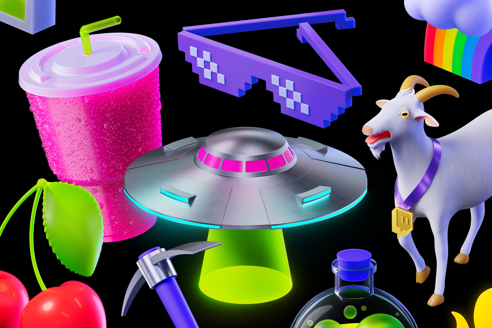
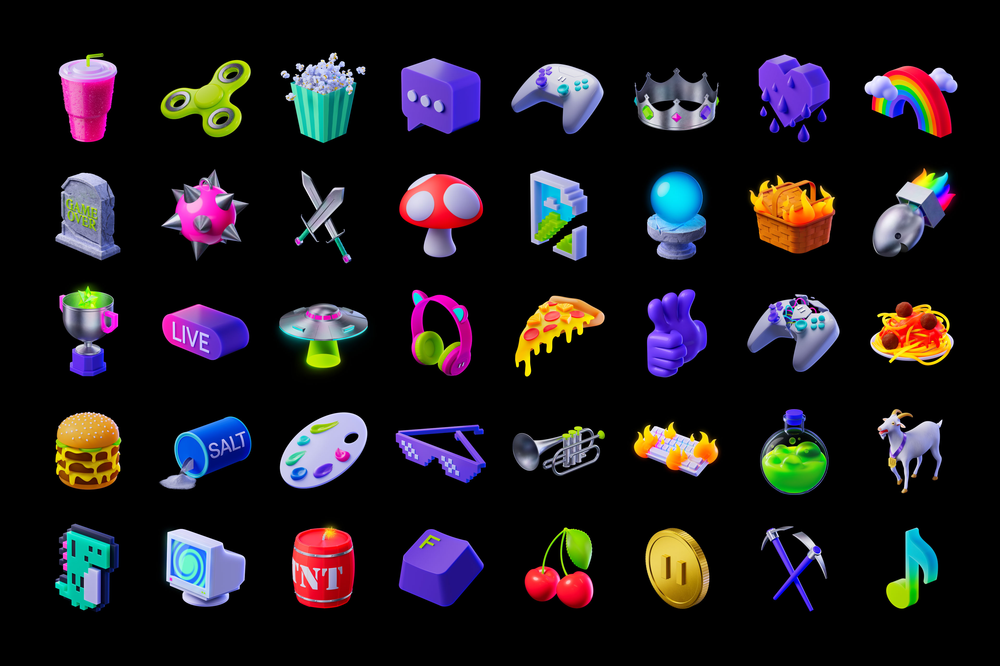

Twitch
Illustration library developed to support the Twitch brand refresh, moving the brand away from analog references and into a hyper-digital, 3D world brimming with graphic motifs — dimensional illustrations, ‘sprites’, emotes, and dynamic gradients.
- Client: Twitch
- Year: 2023
- Creative and Art Direction: Porto Rocha
- 3D and Motion: Pedro Veneziano
- Modelling Support: Lukas Kawakami
- Developed in partnership with Twitch Creative Team